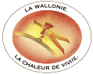
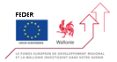

Fédération des Gites de Wallonie asbl.
© 2004 - 2013 - All rights reserved.
avenue Prince de Liège, 1/21
B5100 Jambes (Namur)
info@gitesdewallonie.be
Tel: 32(0) 81 311 800 - Fax: 32(0) 81 310 200
avenue Prince de Liège, 1/21
B5100 Jambes (Namur)
info@gitesdewallonie.be
Tel: 32(0) 81 311 800 - Fax: 32(0) 81 310 200

Commissariat général
au Tourisme
de la Région wallonne
au Tourisme
de la Région wallonne

FEDER
PROGRAMMATION 2007-2013
Axe prioritaire 3:Développement territorial équilibré et durable
Mesure 3.03 :Redynamisation urbaine et attractivité du territoire
Le Fonds européen de développement
régional et la Wallonie investissent
dans votre avenir.
PROGRAMMATION 2007-2013
Axe prioritaire 3:Développement territorial équilibré et durable
Mesure 3.03 :Redynamisation urbaine et attractivité du territoire
Le Fonds européen de développement
régional et la Wallonie investissent
dans votre avenir.